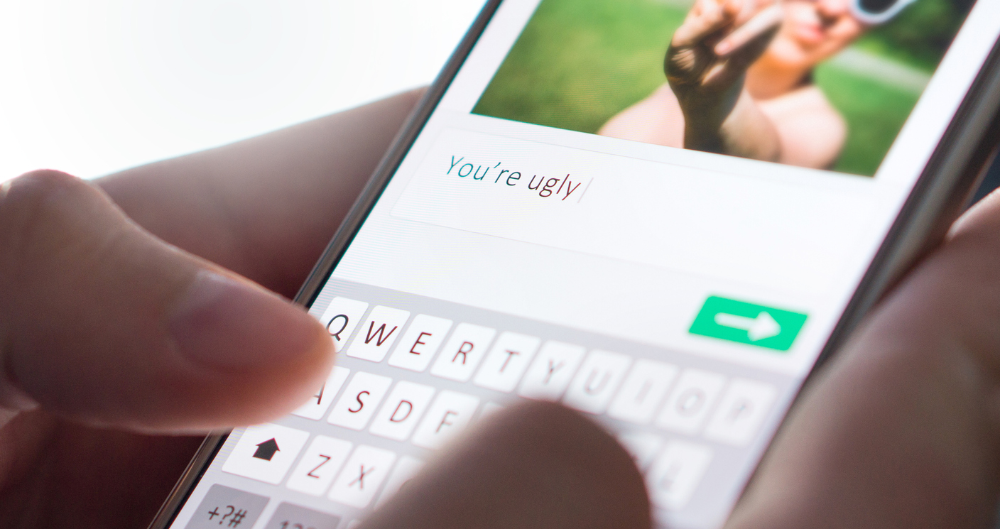

Exclusion

Exclusion is the act of leaving someone out deliberately. Exclusion exists with in-person bullying situations, but is also used online to target and bully a victim.
Cyberstalking
Cyberstalking is a particularly serious form of cyberbullying that can extend to threats of physical harm to the child being targeted.
Harassment
Harassment cyberbullying fall into, but it generally refers to a sustained and constant pattern of hurtful or threatening.
Outing/Doxing
Outing, also known as doxing, refers to the act of openly revealing sensitive or personal information about someone without their consent for purposes of embarrassing or humiliating them.
Trickery

Trickery is similar to outing, with an added element of deception. In these situations, the bully will befriend their target and lull them into a false sense of security.